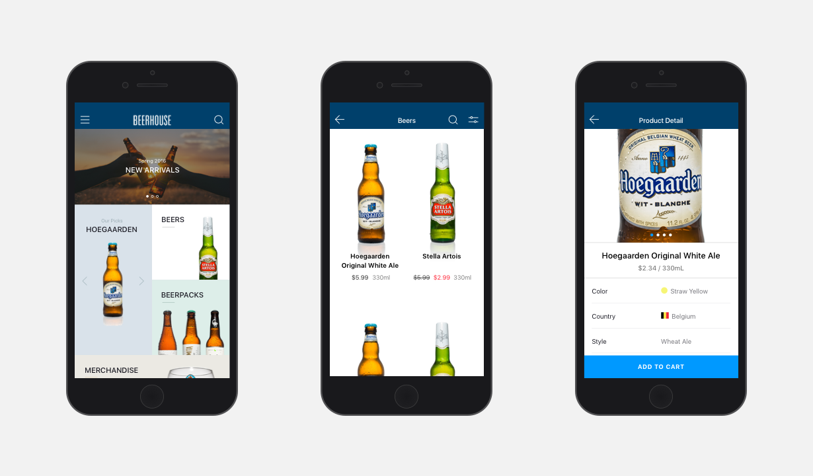
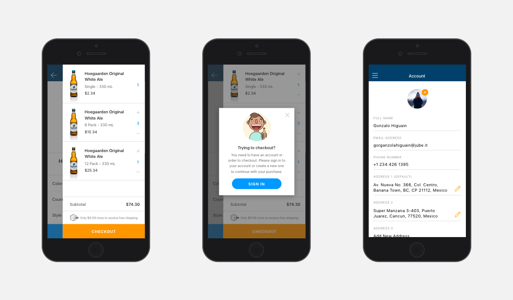
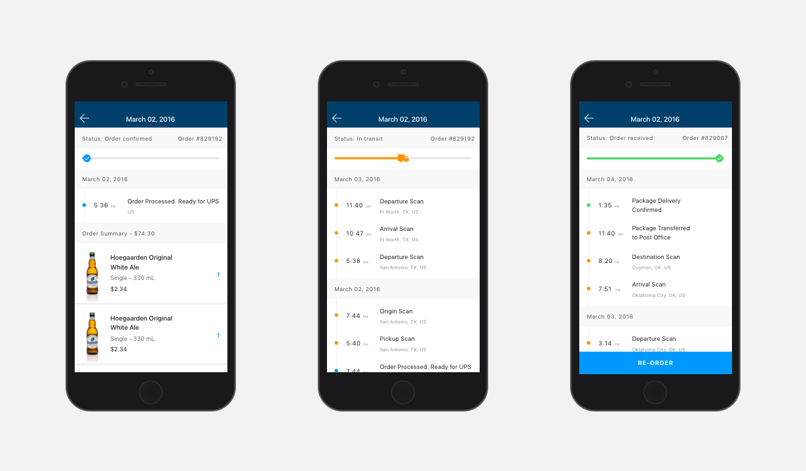

Beerhouse
- Information Architecture / User Flows
- Wireframing / Prototyping
- Usability Testing / Visual Design
AB InBev asked Fuzz to create a mobile shopping experience for their e-store platforms in Mexico and Argentina. The challenge was to develop a global mobile app that would be able to scale for different regions and e-stores seamlessly, while meeting the needs of users in each specific region.


